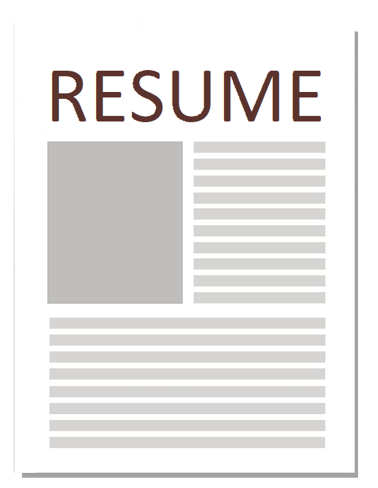
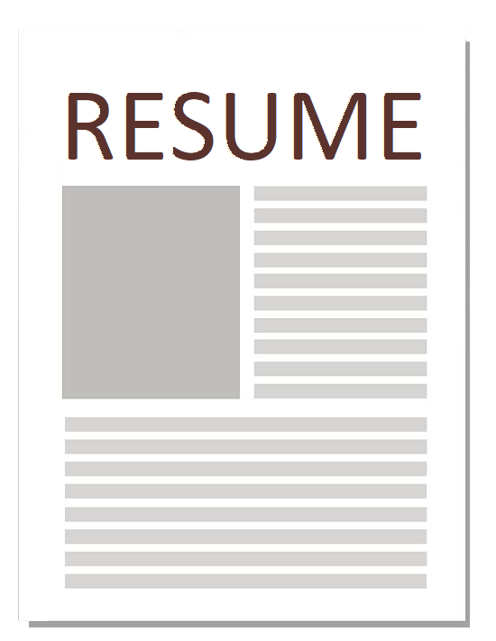
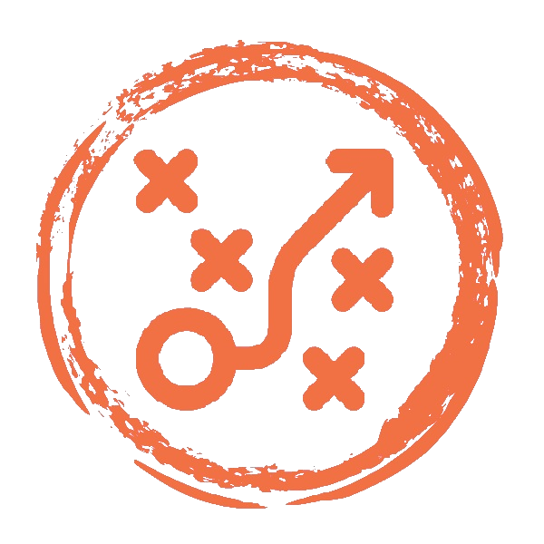
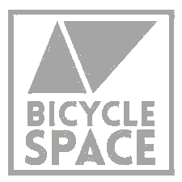
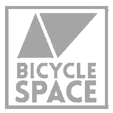

A Rodeo Story.
My Principles for Problem Solving
In It To Win It
When I was a child, I went to a rodeo. A contest was announced and kids were invited to the center of the ring. I was shy and hesitant but my parents nudged me to take part. At eight years old, I was one of the smallest participants, but determined nonetheless.
Don't Blindly Follow
Whichever contestant could remove the ribbon from the tail of a young bull would win a prize. When the bull was released, it orbited the outside of the ring, and, quickly, the large group of children crashed after it as a pack. I, however, had a different plan.
Find The Smartest Way
I alone chose to move the opposite direction and went to cut off the animal as it rounded the arena. When the steer came by me, I lunged for the ribbon and was victorious. I am proud that in this moment, I was able to use strategy and identify the best way to a solution.

Be open to novel ways of thinking · Look at things from different angles · Be inventive to achieve your goal
 
